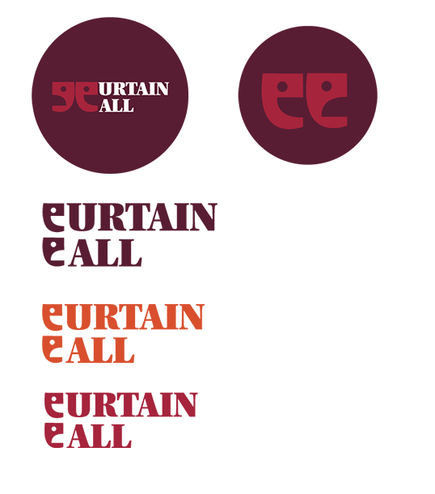

General Information
This branded website is publicly available at:
This website was created by:
- Loes van der Looij (ID: 220277)
- Elena Küppers (ID: 213523)
- Mare Kreupeling (ID: 221035)
| # | Student ID | Value | Name and link of content |
|---|---|---|---|
| 1. | 220277 (Loes van der Looij) | Value | Content title |
| 2. | 213523 (Elena Küppers) | ||
| 3. | 221035 (Mare Kreupeling) | ||
| 4. |
Content
Target audience: Gen-Z theatre/musical lovers (18 – 26), living in the Netherlands.
Persona 1:
*personas are based upon the interviews with our target audience.
Background: Guusje comes from a middle-class background in The Netherlands and pursues a college degree in media production in Utrecht. She engages in the arts, loves drawing, blogging and photography and sees it as a form of escapism and bonding with those close to her. She casually visits the theatre for a variety of shows and does not have a genre preference.
A day in the life: Guusje goes to her college classes like every morning and texts a friend to ask if she can hang out in the Utrecht city centre after their final class. In between classes and this hangout, she uses social media to see what her friends are doing and what the cultural institutes she follows are promoting at the time. She tries to find new plays that are showing that she can see with her mother and grandmother on the social media pages of theatres all over the country. She is looking for a variety of plays and stand-up shows depending on what the local theatre is showing at the time and what her family likes. She discusses what is playing with her mother and shares the promotional material of the play they chose with her friends on Instagram. While out with her friend after classes, they discuss the most recent music releases and the theatre shows she is interested in in the hopes of connecting with her friend and getting them interested, but failing. She leaves for home and talks with her family before heading upstairs. Before bed, she talks to her friends, checks her feed and buys theatre tickets for that week.
Frustrations:
Wants and Needs:
Explanation of our Logo:
Going into the creation of the logo, we wanted to implement aspects of the theatre into the design. As our brand is called ‘Curtain call’, we go inspired to include a curtain in the logo. In addition to that, we re-designed the typical theatre masks showing a happy and sad emotion and used them as a replacement for the letter ‘C’ in our brand name. After presenting our visual ideas to our supervisors, we received the feedback that the logo, font, and overall style of our visual identity was too old school and did not match the young target group we are approaching. Thus, we reconsidered our choices and made minor tweaks to the logo. We kept the idea of the two theatre masks being used as a placeholder for the letter ‘C’ and changed our fonts and colours (as explained in the production section). Instead of implementing the curtain in the logo, we placed the two theatre masks against each other in a way that they create a curtain themselves. To have more variety, we created multiple different versions of the logo with different colours and placements, which especially was helpful for the creation of our Instagram posts as they were also varying in terms of colour and design.

Production
Design Elements
-
Our colour scheme:
- The dark pink is inspired by the colour burgundy red. It symbolises individuality and fits to our value of ‘Expression’ (Olesen, 2022). We are committed to create an environment where our users can express themselves freely and exchange opinions without being judged. With the choice of this colour, we want to make everyone feel welcome and comfortable to show their true selves and be individual.
- #591D33 Dark purple stands for wealth and luxury and by making use of this colour, we want to immerse our users into the world of the richness of theatre (Chapman,2021). In combination with the more vibrant colours such as orange, we want to bring a touch of seriousness into our brand, while keeping it colourful and welcoming at the same time.
- #D9BC9A Beige is connected to comfort, softness and sweetness (Designs.AI, n.d.). We included the colour in our brand identity to set some ease between the other colourful and dominant colours. As one of our values stands for ‘Community’, with which we prioritize a safe space for connections and interactions, we believe that beige creates a comfortable environment for our users.
- #D94F30 Orange stands for vibrancy, energy, creativity, and enthusiasm (Van Braam, 2024b). One of the problems that we established in our lean canvas was the negative atmosphere our target group comes across when being active on social media pages regarding the theatre community. Thus, we aim to create a warm environment with our website, and foster positivity and creativity.
- #A61C1C With the dark red we want to make the connection to theatres and the interior of a theatre, as the colour can often be found in the curtains on the stage or the seats. Dark red is a colour that represents warmth, passion, and intense feelings (Van Braam, 2024a). As we target theatre lovers, we recognized in our interviews with them that they have a great passion about the plays and musicals. Since one of our values is ‘Culture’, with which we aim to celebrate the cultural landscape of theatre in the Netherlands, we want to share the passion we have for theatre and invite our users to share theirs as well with each other.
- Font choices: During our Brand building, we made different choices in terms of the fonts. At the beginning of the project, we started with a more classic vision with the font ‘Mrs Eaves’. We wanted to keep the font for the logo classic and make it resemble an old theatre feeling. During the feedback session with our supervisors, we received the comment that the logo as well as the font is too classic and does not fit to the target group of Gen z that we are targeting. Thus, we made chances to our logo, colour palette and fonts and tried to make our brand more modern and approachable to our young target group. As for the new font of the logo, we decided to choose the font ‘Utopia’, which is simple and has attention to small details at the same time. We wanted to distance us from the classic and old feeling and strive towards a younger, bold and more vibrant style with the font style ‘Black Headline’.
- User interface patterns: To make our website as easy and understandable as possible for our users, we implemented a few user interface elements. At the top of our website a navigation bar can be found, providing an overview of different pages and contents the website has to offer. Moreover, buttons such as the ‘Sign up’ button at the bottom of the main page, or the ‘Reply’ button in the chat function, are highlighted with coloured boxes to make them stand out from the rest and which makes it easier for the user to navigate quickly to important elements. Another UI element that we incorporated was a text field option to write reviews about different plays and musicals. Users can fill in a text box and give a rating from one to five stars. Afterwards, they can fill in the title of the play or musical they have seen and write a review in the box underneath. In terms of UI patterns, we made use of a vertical carousel for the ‘Currently playing’ feature. As it is listed right under the hero section, the user can easily find inspiration about plays that are popular at the moment. The carousel makes it possible to offer a selection of plays without taking up too much space in an efficient way and lets the user browse through the series of items quickly. It shows the name of the play and includes a button underneath with the option to find more information about elements such as place, date, and language of the play on another page of the website. Another pattern that can be found on our website is a drop-down menu in the navigation bar. After clicking on the ‘Profile’ element, another small menu appears which distinguishes between the ‘Profile’, the ‘Chat’, and the ‘Now Playing’ function the user can choose from. This way, the user can access the chat or information page about current plays quicker and can skip steps to reach their goal more efficiently.
- The structure of the navigation and content: Before going into creation of the website, we conducted several interviews to get insight into the problems our target group deals with. We established various issues and tried basing our website on the needs of our target group. The main points that were mentioned in the interviews were the high-ticket price of theatre plays and musicals, the negative environment on social media platforms regarding exchanging opinions and experiences, the lack of connections with like-minded theatre lovers, and the lack of information on other theatre websites online.
For our Instagram posts we were working with the website Canva which does not provide Adobe fonts. Thus, we tried to find a similar font for the headlines and made use of the font ‘Bugaki’. It also has a bold and young effect to it and looks similar to the font we implemented in our logo. In terms of the font for the body text, we made use of the font ‘Glacial Indifference’, as it is a simple font which is easy to read and does not grab too much attention from the rest of the post. For the fonts we implemented in our website, we tried to find the ones that are the most like the ones of the logo and posts on Instagram. For the headlines we chose the font ‘Yeseva one’ as it also has the attention to detail and brings out the playfulness that can be found in the other fonts. For the body text, we decided to choose a simple and easy to read font as well and took orientation from the one we used in our Instagram post. ‘Josefin Sans’ is the most like the one we use in our Instagram posts, which creates consistency with the rest of our content.
As for the UI patterns, we focused on consistency, simplicity, and alignment. The navigation bar and footer are coherent on all pages of the website which avoids confusion and makes it easier for the user to navigate through the different sites. Since the information is only a few taps away and can easily be found through the drop-down menu or the ‘Sign up’ and ‘Reply’ buttons, simplicity is created. In terms of alignment, the website is created with various columns with different colours, to create order and to create a better overview of the content. As the user is scrolling down the landing page, they get led through the different elements and can comprehend the content more easily. Alignment can also be found on the ‘Profile’ and ‘Chat’ page where dividers are being used to distinguish between the different contents and messages.
Based on those insights, our goal was to create a platform that offers information, a way to connect and communicate with other people in a safe space, and the possibility to collect discounts for theatre tickets. Starting with the top of the landing page, an inviting hero section can be found which gives a brief overview of what the website has to offer and invites the user with small calls to action to start their journey with our brand ‘Curtain Call’. Right below, the carousel offers a variety of current plays that are popular and by clicking on the ‘Learn more’ button, the user can find important information about the play on another page called ‘Now Playing, which solves the issue our target group was dealing with on other theatre websites. Scrolling further down, information about our brand can be found such as the vision and values of the company and a footer with social media icons to discover more content of our brand. Another option on the navigation bar is to go to the ‘Profile’ page. The user has an overview of plays they reviewed and can write a review themselves as well at the bottom of the page. Down below is the possibility to read reviews other users have written and the option to reply to them, which leads the user to the ‘Chat’ function. This tackles the concern about the lack of connections and friends of our target group and gives them the opportunity to talk to each other, exchange opinion, and discuss plays in a safe environment. To solve the problem of the high-ticket prices, the ‘Profile’ page also offers the possibility to collect discounts for written reviews. The user has an overview of collected discounts for certain cities in the Netherlands and can collect discounts with a point system for lower ticket prices when visiting the theatre in the future.
Credits
- (buas-media-interactive/prj4-group-template ) This template has been the only one utilized in the creation of this website.
- We only used codes and templates provided by the “Bootstrap” library and BUAS (see Bootstrap for a list of such patterns) getbootstrap.com/docs
- The pictures of all theatre posters have been AI generated on CanvaPro with the function ‘Magic Media’. They have been used for the carousel on the landing page, and the review sections on the ‘Profile’ page. Additionally, one has been used in the hero section of the ‘Now Playing’ page.
- The rating stars used in "profile" come from W3schools.com
- The chat used in "chat" come from W3schools.com
- Hero Section Background “wallpapernew” - Photo by Mark Thompson from Unsplash The image has been provided by Unsplash and was used as a background for the hero section on the landing page
- The avatar icon of the woman On the ‘Profile’ and ‘Chat’ page has been provided by Freepik by the account ‘flatart’
- The avatar icon of the man On the ‘Chat’ page has been provided by Freepik by the account ‘flatart’
Testing Report
Please write about…
- Your testing goals – in other words, what you are trying to learn about your website?
- Your testing methods, which includes information about:
- The test’s participants (number, match with target audience, etc.)
- The test’s setting (which material is used, is it done remotely, on campus, at home, etc.)
- The test’s protocol (what instructions are given, how it is recorded, etc.)
- Your testing results, which includes information about:
- Positive and negative aspects of the UI/UX that have been identified, ranked by importance.
- Improvements that have been implemented on the final website (or that would be implemented if doing so would be too complex)
Marketing
Context of campaign and promotional activities
Curtain Call is a community app that aims to provide young theatre lovers in The Netherlands with a platform to connect through their love for theatre, log activities and track what is playing in the country. Users can log these plays, indicate which company performed it and where, rate the various aspects of the production, and write reviews. Through this they create a taste profile that is portrayed on their very own profile through which they can connect with one another. They can track what is playing nearby and all over the country and save up points for a loyalty reward system that gives them theatre ticket discounts that they collect through logging and reviewing plays.
Curtain Call wants to bring together theatre lovers in The Netherlands to give them a hub in which they can share their opinions and express themselves freely. The application is promoted on social media, which is where a majority of theatre lovers currently come together to express their thoughts amongst themselves. We want to capture this audience by sharing engaging posts that not only promote our application, but also celebrates the theatre and brings people together through highlighting popular and more underground plays to attract all corners of the community to find their own place.
The Feelings we want our users to have:The actions we want our users to take:
Media Tactics:
We want to host a campaign that prioritises reach over engagement. This is due to Curtain Call being a community-based platform which prioritises bringing people together from all corners of The Netherlands to express their love for theatre freely. We want to reach as many people as we possibly can to create a big userbase with a variety of taste profiles across The Netherlands. To do this we will post four times a week on our Instagram feed, these posts are professional and contain official announcements and information about the website and generate website traffic on top of posts about theatre related topics such as fun facts or recommendations. The feed posts will be picture Carousels and brand announcements to generate a high as level of diverse content and reach.
The story posts will be used to engage with audiences through behind the scenes footage and smaller updates on the website to keep audiences informed and give them insight into the website development so they can connect with the brand. This divide is a conscious effort to separate engaging posts from the informative ones and keep our social media organised.
As for TikTok, we will post two times a week, but if a sudden trend pops-up we will adapt to that and post an extra video. The content on TikTok will give the audiences a look at the website development process but this will also include funny and relatable content and play into trends. This will be complimentary to the Instagram stories. This funny and relatable content is focused on reaching as many theatre lovers on TikTok as we possibly can through talking about relatable struggles that they could be facing that are indirectly or directly resolved by Curtain Call to connect the content to our campaign and webpage.
The TikTok and Instagram content will overlap to a certain extent, with the TikTok posts being posted on Instagram stories and Instagram carousels being posted to TikTok carousels.
Social Media platforms we used:
Why Instagram and TikTok?
In The Netherlands, Instagram is among the most used social media platforms for our target audience age demographic (18 – 28) making up 25% of researched users (Statista, 2023). TikTok has also risen to be one of the biggest social media platforms for people within our target group in 2023 and has yet to see a decline in success. An estimated 2,120,000 people between the ages 15 and 29 use the platform, making up over half of the 4,000,000 people from ages 6 – 40+ that were researched by Statista in 2023 (Netherlands: TikTok Users By Age Group 2023 | Statista, 2023). This alongside the insights we gathered from our interviews that reamplified what our sources stated. They all stated that they get a lot of information about the theatre from Instagram and view it as a social platform through which they keep up with their friends.
TikTok was often named as the most-used platform and entertainment source for our interviewees. They sought it out for escapism and not for information, they often view trends as a main source of content and enjoy seeing brands engage with social media trends, which we incorporated in our social media plan. This made us pick TikTok as we believed it provided our audiences with the entertainment aspect of our platform and use the trendy posts as a gateway to our webpage to attract new audiences.
What exactly did we post?
Instagram:
Based upon the article of Geyser (2024).
Monday: 05:00 – 08:00
Wednesday: 05:00 – 08:00
Friday: 15:00 – 18:00
Sunday: 15:00 – 18:00
TikTok:
Based upon the article of Nguyen (2024).
Tuesday: 6:00 – 10:00
Saturday: 19:00 – 23:00
Based upon the trends of the week, there is room for more posts that follow the trends. These trends take on several forms, such as trendy audios and music, audio clips and dialogue re-enactments (Geyser, 2024a). Both platforms will be used for entertainment and engagement purposes, but TikTok will focus on playful content as our interviewees and trend analysis suggest TikTok users value visually appealing short-form content and trends over informative and long-form content (Hill, 2024).
Our Reach Objectives: Monthly Kpi's:
Brand Awareness: reach instead of engagement:
Attract New Customers:
Smart Goals for end of project:
Brand Awareness
Attract New customers:
New Goals:
Overall, we noticed that we needed to revisit our SMART goals on both of our social media platforms because we surpassed the initial goals by a significant amount. On TikTok and Instagram, we noticed that our follower count went to plan, but that we had a much bigger reach than we had anticipated. On average, our TikToks have been getting about 2,000 views a video and we were on track to gaining five followers a week. And on Instagram, we surpassed our following goal and had already acquired our desired reach. This is why we decided to change the following goals (tracked the same way as the initial goal with the same motivation):
Brand Awareness:
Attract New Customers:
These changes were made according to our existing numbers and potential for growth. We estimated a small growth of about 20% based on our follower numbers as we did not plan on increasing our post volume due to how busy we all were at the end of the project.
Reflections:
Genereal Reflections on objectives:
Overall, it should be noted that we did not achieve our reach objectives and not all of our engagement-related objectives either after revisiting our initial goals. Especially our follower related goals were not met ( Instagram 39/50, TikTok 26/30) as we did manage to get a broader reach from account views, but not a bigger following after resetting our goals to better fit the engagement we were receiving. Our reach also did not improve as expected as it did grow, but not with the significant amount that the growth started off with in the first month of posting. We noticed that we did near our goals and that they could have been achieved as we were close to hitting them. Our follower number almost hit their goal, our reach was close on both platforms and our engagement stayed consistently stayed above our initial expectations. This makes us believe that if we further pushed the campaign and boosted our content by posting more and extending the campaign, we could have hit our goals with relative ease and would have been able to set even higher goals as reflected in the future planning.
Instagram:
Our posts were created as described above and were supposed to vary within the week. We created recurring themes such as ‘Musical Monday’, ‘International Friday’, and ‘Spotlight Sunday’, which followed certain topic and targeted a specific part of the theatre world in detail. By having those recurring posts, we were able to create a consistent and visually pleasant Instagram format. Additionally, it was easier to create content as we were able to copy and adjust the posts we already had. This way, our followers were able to know which post would appear for which day and could look forward to new content of the different categories. As we had the specific topics for Mondays and Fridays, we used Wednesdays to give insight and provide explanation of our brand. It was easy to come up with content for these kinds of posts, as we introduced our vision, values, and website´s components. However, for our Sunday posts we had some difficulties finding enough content. ‘Spotlight Sunday’ posts were originally supposed to show the website´s progress. However, as we were not as far with the creation of our website, we were not able to show as much progress for weekly Sunday posts. Thus, we quickly came to the solution to make use of the comments and feedback we received in our solution interviews. This way, we could give insights into what the website would have to offer and make our followers excited for what was to come.
In terms of the schedule we created for when we post on Instagram, we encountered some difficulties at times. Especially at the beginning, when we have not established the recurring themes and topics yet, we did not stick to the time schedule. Even though we always managed to post on the correct day, we did not regard the times and posted rather based on when the post was finished. Considering the planning and work on the other parts of the project, we did not prioritize the schedule as much. This is also the reason why we only posted four times a week. We believe that if we would have been more strict with ourselves, and if we would have put more effort into creating the posts in advance and not on the day itself, we would have been able to be far more active and on time on Instagram. In addition to that did we overthink a lot during the creation of the posts. As our designer tends to be very perfectionistic at times, she focused too much on little and unnecessary details. After the first few posts have been created, it got better, as we were able to just copy the posts and adjust the content for that day. Nevertheless, the time could have been redirected towards creating multiple posts a day.
Looking at the statistics of our Instagram activity, 156 accounts have been reached within the last 30 days and 30 accounts engaged with our page. We reached out to more people who did not follow us, however we received more engagement from followers who do follow us.
For both the engagement and reach, the posts have been far more popular than the stories. We focused more on creating posts and only started diving more into stories towards the end of the project. We noticed that the stories had more of an impact on the engagement and reach as we changed the content we created for the stories. At the beginning, we mostly reposted our posts or TikToks, however none of them turned out to be on the ‘Top content’ list for reach nor engagement in our Instagram statistics. For the last week of posting, we were more creative with our stories and implemented a Q and A which asked the followers to comment their favourite play or musical. We then also posted the answers we received in our story and it turned out that those story posts ended up being on the top 5 ‘Top content’ list for reach and engagement for that week (see Instagram statistics: 29 March to 4 April in ‘Professionalism’ section). We learned that being more creative with story posts is crucial to reach and engage with ones followers and that the focus should not only have laid on the creation of posts, but also of stories.
Moreover, we noticed that for the whole period, the recurring posts such as ‘Musical Monday’ and ‘International Friday’ reached a lot of people and were quite popular (see Instagram statistics: 6 March to 4 April in ‘Professionalism’ section). On the opposite, in terms of engagement, informational posts about brand insights or general facts were leading. Thus, working with consistency and recurring themes was quite successful for us and helped us reach out to a lot of people. Another factor we noticed was that during the full period, for both the reach and engagement, the very first post which is based on a social media trend has been on the top of the list. We divided out content in a way that Instagram would be insightful with information and fun facts about theatre related topics, and TikTok would be the platform to post more entertaining and funny content. Based on the insight that the more out-of-place and funny post on Instagram has been the most popular, we learned that a division might not have been necessary. If we would have posted more entertaining and trending content on Instagram as well, perhaps we would have reached out and engaged with more people and followers although this may impact brand awareness.
Tiktok:
While our content on Instagram focused more on informational and insightful posts regarding the theatre world and our brand, we wanted to use Tik Tok more for playful and entertaining content as our interviewees and trend analysis suggest TikTok users value visually appealing short-form content and trends over informative and long-form content (Hill, 2024). Just like for the posts on Instagram, we worked with a schedule for Tik Tok, which was focusing on Tuesday and Saturday, as they were the days we did not have content on Instagram. ‘Theatre Tuesday’ was scheduled to be used for funny videos about theatre, whereas Saturday would give behind the scenes insight of the making of the website in a fun and entertaining way. Nevertheless, we did not entirely follow the schedule. Even though we managed to post all eight videos over the time span, we often were delayed by a day or two, due to the same reasons we as with the schedule for Instagram. In addition to that, we did not stick to the content of the schedule and rather posted what we thought was the most trending or funny video content on Tik Tok at the moment. We tried to find a combination of popular videos, and entertaining ones which would specifically target the theatre lovers by referring to relatable situations. We do not regret being more spontaneous with our content production on Tik Tok, as we realised quickly into the project that we were reaching a few of our objectives already and that we set the bar too low in terms of certain numbers. Especially the views and likes on TikTok were way higher than expected. We believe the reason for that was the use of songs that were trending at that moment. Instead of following a set schedule like we did on Instagram, we got inspired by the most popular videos and decided spontaneously which trend would be the best option for a certain day. The new goal of reaching 2,000 views per video on Tik Tok was not achieved. Nevertheless, all of the videos had over 1,000 views with the leading one having around 3,600 views. The two most successful videos were the ones using a currently trending sound with a fast-forwarded Dia show of theatre images.
We definitely underestimated ourselves and did not expect that we would reach as many people with our videos on Tik Tok. As for the video with the most views, we received 367 likes, gained 5 new followers and were saved by 31 people (see Tik Tok statistics: 12 March in ‘Professionalism’ section). The least viewed video still had 1,117 views which was also far over our first objective of a couple of hundred views per video (see Tik Tok statistics: 27 March in ‘Professionalism’ section). Both of these videos reached our target group of 18-24 years old and the Netherlands was the country listed on either the first or the second locations we reached. Thus, we can state that we definitely approached our target group and were more than successful with our Tik Tok content. The video that gained the most new followers was posted last on the first of April and was also one of the trending ones including a Dia show (see Tik Tok statistics: 1 April in ‘Professionalism’ section). We gained 7 new followers and 43 people saved the video. However, despite the high amount of views and likes we received, we missed reaching our second goal of 30 followers by 4 people. Furthermore, despite the engagement of saving and liking the videos, we did not receive many or barely any comments under our videos and the average watch time was never longer than around 4 seconds. This makes us question if we really had an impact on our target group with our content and if they would be likely to visit our other social media page or website based on this form of promotion. Perhaps if we would have posted multiple videos per day and would have been even more up-to-date with the current trends, people on Tik Tok would have noticed us more. Nevertheless, we learned that an entertainment app such as Tik Tok can do wonders in terms of reaching out to one´s target group and should definitely not be underrated when trying to build up a brand from scratch.
Learning Points
Working together as a team on the marketing part went really well. After establishing the basis of our brand together, we divided the marketing part into several tasks. Mare was mostly working on putting everything together in the Marketing and Communication document, whilst the other members contributed details and adjusted parts of the content to round it off. Elena was responsible for the design of the brand as well as the design for the posts and stories on Instagram and received help from Loes as well. In terms of content creation for the social media posts, everyone contributed ideas on what could be posted and we communicated well as a group and helped each other out when someone was struggling. Loes was responsible for the creation of the Tik Tok videos and was the main admin who uploaded the posts, videos and stories on the social media platforms. Towards the end of the project, Mare and Elena were finishing off the justifications and reflections whilst Loes was perfectioning the coding for the website.
Overall, we can say that we worked very well together as a group. We divided the tasks equally and supported each other when advise or help was needed. In terms of communication, we could have met in person more often outside of the scheduled classes, as arranging and discussing everything via online messengers turned out to sometimes be difficult, considering that everyone was working on the project at different times and a different pace. Another thing we could have worked on was to divide the specific roles earlier into the project. As we were working on the different parts, the role division happened automatically throughout the weeks but we never took the time to specifically divide everything per member. Thus, at the beginning of the project, it sometimes was unclear what part exactly everyone was working on and what still needed to be finished. If we would have taken the time to go into detail with the task division, misunderstandings of who is responsible for what part could have been prevented.
Future Planning
Although we were pleasantly surprised by the overall success of our current campaign, which is reflected in the revisited goals, we would change some things moving forward. We agree that our general strategy worked and was sufficient for the beginning of the campaign as we did achieve a majority of our desired results, but see that we need to make a few significant changes.
The main changes would be found in the frequency of posting. Our schedule worked, but did not provide us with optimal engagement. When furthering the campaign, we could improve upon this by sticking to the schedule better as reflected upon in the reflection points. This would adhere better to the posting times and schedule and provided by our sources and could show more desirable results in engagement as posting at our scheduled times was said to boost content interaction and overall engagement of the Curtain Call profile.
We would also want to increase the amount of posts on our social media and show more of the website progression as this would engage audiences with the product. We would also combine our media channels through reposting content and making sure that our posts reach our audience on both Instagram and TikTok. This could have been done with the q and a sessions on Instagram for example, the answers of the Instagram audience could have been posted as a slideshow on TikTok to show the taste of our audience and engage the TikTok audience with the content on Instagram and create a wider reach as this was established to be our main goal. We could also have posted more engaging Instagram stories to involve followers with our brand, which would be a priority moving forward to foster the community feeling on the website online as well.
We would also revisit our social media content on TikTok and post more brand-related content that segways the audience we reached through our popular theatre posts to our brand. Now it feels like they enjoyed our content, but brand awareness was low and the values of our brand were not directly reflected in our content. However, we would continue to post these on-trend videos to boost our reach and overall profile engagement to reach a wider audience through the algorithm. They worked very well to establish a basis for our platform and could be further utilised to attract new customers. This seems to be a promotion strategy used by many big brands with a big online presence, such as Dutch brands Bol.com and HEMA. This content is very popular and helps people warm up to the brand, so it would be a good plan to keep it in the content plan for the future. However, we would combine it with an extra two professional posts, which increases the post rate for TikTok to 4 posts a week, which should boost engagement.
Generally, we would increase our number of posts, but stick to the same content in addition to some new content. This would help us fulfil our goal of reaching new costumers instead of improving our engagement, which is something we would want to move on to after May when we work on making our customers loyal to the brand and stimulate organic marketing moving forward.
Future goals for the month of June:
Instagram: 60 followers (total), reach same as in revisited goals.
TikTok: 35 followers (total), reach same as in revisited goals.
With the engagement of our current post and the gradual regrowth of our reach that would be predicted by posting more often, we believe that extending our following with these numbers is feasible for the month of June.
Professionalism
Present and organize below all social media/online activities of the campaign. Context and material are according to the brand style, image, and vision. Images on the site are of high-quality, readable, and properly designed.

Management
Lean Canvas
This is our final version of the lean canvas. The other two are added in the Management Appendix.
Problem
- Lack of like-minded people and connection.
- Low advertisement rates for lesser known shows and exposure, and a lack of information about the theatre (show length, language etc.)
- High ticket prices for theatre shows for low-income students.
Solution
- A website with information on current theatre shows and future shows (where, when, length, language etc.)
- A website where customers can log in and review which theatre shows they've seen and with that earn points. By writing a review and putting in their ticket code from their visit to the theatre, they collect points. With a certain amount of points, they can get discounts for theatres in the Netherlands.
- They can also engage and share their opinions with each other. They can respond to others' reviews and connect with like-minded people.
Customer segments
- Gen Z: 18-26
- Dutch or International
- Any gender
- Living in The Netherlands
- Living at home or in shared student housing
- Minimum wage income
- Casual theatre visitors
- Visits theatre alone, or with family or friends.
- Personality: social, active and curious.
Unique value proposition
- We have the Dutch theatre community as a priority, which is under-represented in general and does not give us any direct marketing competition.
- We have a platform that offers an overview of plays and performances that are currently running, social features, and a tracking system making it an extensive hub.
- Through a collaboration with The Netherlands' biggest theatres we can provide people with a discount system that benefits our target audience.
Unfair advantage
- We are a part of our target demographic.
- We are in an artistic sphere with people who are more interested in theatre than the average consumer, which helps researching and gathering perspective on the wants and needs.
Channels
- Instaggram (web page and advertising).
- TikTok (web page and advertising).
- The website itself
Key metrics
- Website engagement (visitor traffic, clicks and scanned tickets)
- Social media post engagement (likes, vies and comments)
- Account signups
- Instagram: Followers: 39
- TikTok: Followers: 26
Likes: between 5 and 15 per post
Average story views: 1-3 people
Average amount of likes per post: 60 - 490
Average amount of views per post: 1000 - 3600
Revenue streams
- Website price (€10), one time payment in website. Expected 10% of 50.000 people within our demographic that signed up for new youth theatre programs in The Hague. (0.10 x 50.000) x = €50.000 per 6 months.
- The subscription price was determined through the cost of €7,12 within the first 6 months + €2,88 so that we have a small profit after the first 6 months of running the website.
- Profit through photo advertisements. Through online advertisement clicks and engagement, we generate revenue by stimulating acount sales.
Cost structure
- Fixed one time: Salary for the website designers and developers €5.000 (Nationale Beroepengids, 2023)
- Variable costs: Salary for marketing and management team (2 members) €2.000 p/m per member (national Beroepengids, n.d.).
- Fixed costs: Collaboration with Dutch theatres €100 p/m (x3) (estimate partnership fees per theatre).
- Variable costs: Online advertising on social media and browsers €4.800 per 6 months (Van De Boel, 2022).
- Cost per unit for the first 6 months: Costs per 6 months (35.600)/5.000 = €7,12 per subscription.
Services/products
- State what your product and/or service is and how this contributes to your unique value proposition.
- Clarify the fit between the product/service developed and the brand identity/brand image.
Validation of Assumptions
Write a reflection on the choices made in creating choosing the trademark, including an analysis of the existing alternatives.
Appendix
Please use the list below to provide links to evidence for all parts of your justication. Please double-check all links before delivering the website. Do not hesitate to refer to these numbers above.